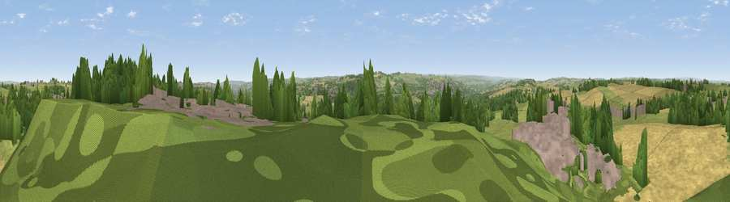

Heddon Common
#16030 in England · top 36% of its area beats it · near Heddon on the WallThe view, rendered

A 360° render of this exact spot computed from the terrain model, tree cover and land cover — summer colours, afternoon light, calibrated against photographs of famous viewpoints. Real trees, hedges and buildings will differ in detail.
The panorama
Grey silhouette: terrain skyline in each direction (720 bearings, Earth curvature and refraction included). Dashed green: skyline with trees (+15 m) and buildings (+8 m) as obstacles. Blue strip: how far the ground is visible on each bearing.
Where the view opens
Wedge length = distance to the farthest visible ground on that bearing (vegetation-aware). Rings at 10, 25 and 50 km.
What fills the view
36% grassland · 33% cropland · 20% woodland · 11% built-up
Angular shares of the visible panorama (visual magnitude), not map area. Landscape diversity 0.57 (0–1 Shannon).
Key numbers
More beautiful places nearby
The staircase of upgrades: each row has a higher view potential than everything closer. Driving times are estimates from straight-line distance, calibrated against real road routing — check an actual route before setting out.
| Place | Direction | Drive | Score |
|---|---|---|---|
| Heddon Laws | NNE · 3 km | ~7 min | 57.5 |
| Viewpoint near Ovingham | W · 4 km | ~8 min | 59.9 |
| Viewpoint near West Wylam | SSW · 6 km | ~12 min | 61.7 |
| Viewpoint near Greenside | S · 6 km | ~12 min | 74.2 |
| Viewpoint near Burnopfield | SE · 11 km | ~21 min | 75.4 |
| Viewpoint near Sunniside | SE · 13 km | ~24 min | 77.6 |
| Pontop Pike | S · 14 km | ~25 min | 77.8 |
| Viewpoint near Rothbury | NNW · 33 km | ~51 min | 81.1 |
54.99518, -1.80191 · source: dobih hill · position refined by local search. Computed location — check access rights before visiting.